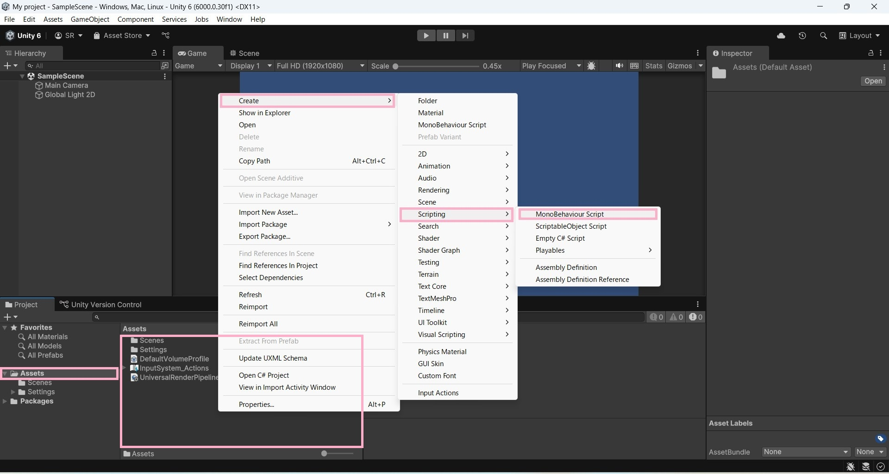
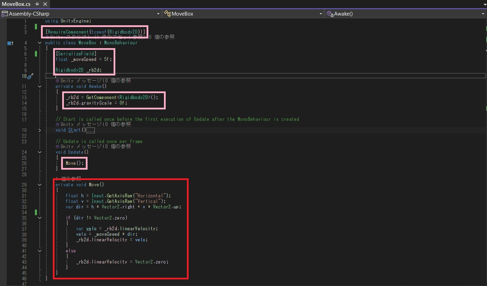
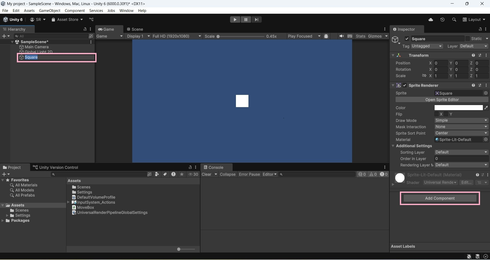
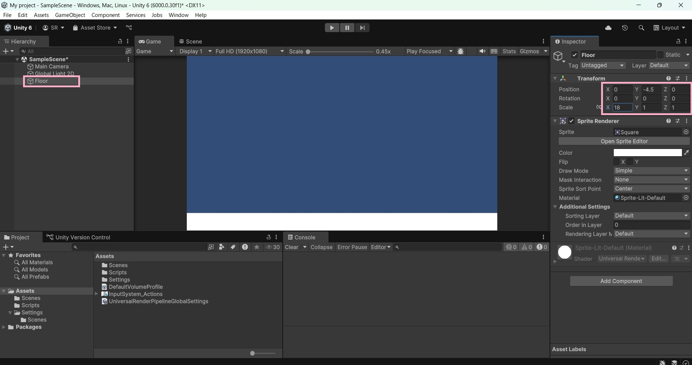

初心者のためのUnityの使い方完全ガイド
まずは事前準備ができているかチェック！
①Visual Studio ②Unity
Hub
この二つがインストールできている方は、記事を読んで頂けたらと思います！
まだの方はこのページ左上からインストール頂けます！
Unity Hubにログインをしよう！

環境構築ができたらログインをしましょう！
（アカウント作成がまだの方は[Sign in]の下にある[Create Account]でアカウントを作成しましょう！）
Unityプロジェクト作成①
左上の[Projects]を選択して、右上の[New project]を押しましょう！
プロジェクト作成②

[Project name]と[Location]を決めたら[Create project]で作成です！
ゲーム作成①

画像と同じ画面になっていれば大丈夫です！
赤い部分で表示領域を調整できます！
スクリプト作成
左下の[Assets]を選択した状態で右クリックでスクリプトを作成していきます！
スクリプト名(ファイル)を指定

任意のファイル名で作成します！
確認！！Unityにアタッチ

作成したスクリプトをダブルクリックするとスクリプトを開くことができます！
画面上部を確認し、[Unityにアタッチ]となっているか確認してください！
※スクリプトを開く&変更するためにVisual
Studioが必要になります。
コンポーネント作成
開いたファイルにピンク枠、赤枠の部分を記述してください！
ゲームオブジェクト作成
さて、先ほど作成したコンポーネント(スクリプト)をゲームオブジェクトにアタッチしましょう！
左側の赤枠の部分で右クリックでメニューを開きます。
コンポーネントをアタッチ
続いて作成したゲームオブジェクトを選択した状態で右下の[Add Component]を押します！
コンポーネントをアタッチ
検索欄に先ほど作成したファイル名を入力して選択します！
ゲーム実行

上部の[実行ボタン]を押して実際に操作をしてみましょう！上手くできていれば、WASD or 矢印キーで動きます！
ゲームオブジェクトの削除

続いてゲームオブジェクトの削除をしましょう！
削除したいゲームオブジェクトを選択し右クリックでメニューを開き[Delete]で削除します！
ステージの作成
続いてステージを作っていきましょう！
[Square]を作成して画面右の[Transform]の値を画像のように調整しましょう！
当たり判定の実装

続いて[Box Collider 2D]コンポーネントをアタッチしましょう！
Playerの作成

次は[Capsule]を配置して[Capsule Collider 2D]と[Rigidbody 2D]をアタッチしましょう！
Playerコンポーネントの作成

Playerを選択しAdd Componentで[PlayerController]と名前をつけたスクリプトを作成します！
スクリプトの編集
画像のようになっていれば大丈夫です！
問題が良ければ以下のコードになるように[PlayerController]を編集してください！
接地判定をし、動きの制御を実装しましょう！

Playerを選択した状態で右クリックを押して、[Create
Enpty]でオブジェクトを生成しましょう！
追加したオブジェクトに[Box Collider
2D]をアタッチしましょう！
※追加したオブジェクトを「Playerの子オブジェクト」と言います。
タグ設定&追加

続いて[Player]と[Floor]の当たり判定を実装していきます！
[Floor]を選択して右側の[Tag]のドロップダウンから[Add
Tag...]を押しましょう！
タグ設定&追加

開いたメニューの[＋]ボタンを押して「Ground」と入力して[Save]を押しましょう！
タグ設定&追加

[Floor]を選択して右上の[Tag]から[Floor]を選択しましょう！
TagがFloorに変わっていればOKです！
接地判定実装

Playerの子オブジェクトに[Box Collider 2D]と以下のコンポーネントを作成＆アタッチをしましょう！
Checker.cs当たり判定の設定

追加した[Box Collider
2D]の設定を画像のように変更しましょう！
※画面上部のタブを[Scene]に切り替え[Edit
Collider]の右側のボタンを押すと当たり判定が確認できます。
仕上げ

最後にゴールとなるオブジェクトを配置したら完了です！
[Circle Collider 2D]と以下のコンポーネントを作成＆アタッチしましょう！
お疲れ様でした！
これでひとまず簡単なゲームを作る事ができました！ 次はゲームを拡張するための記事を書いていこうと思います！ リクエストなどありましたら、お問い合わせからお願いします！